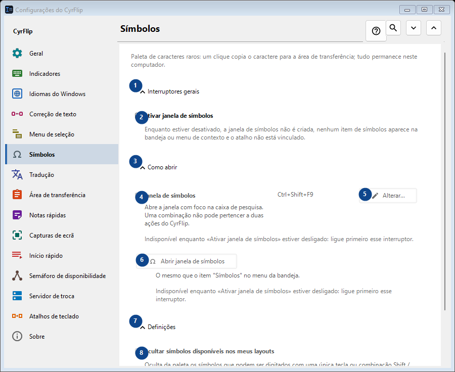
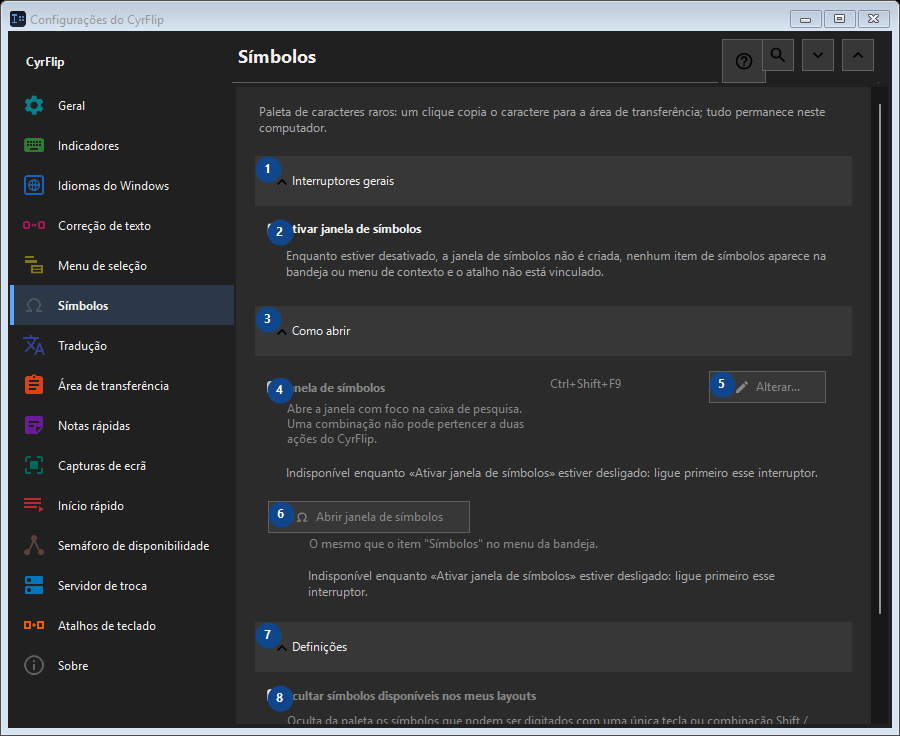

Símbolos
Para que serve
Paleta de caracteres raros: um clique copia o caractere para a área de transferência; tudo permanece neste computador.


Ordem de utilização
As definições são aplicadas de imediato. Não existe uma ordem obrigatória; use os grupos abaixo.
Elementos
1. Interruptores gerais
Use este comando para a ação indicada. Leia qualquer confirmação antes de aceitar.
Os seus atalhos2. Ativar janela de símbolos
Enquanto estiver desativado, a janela de símbolos não é criada, nenhum item de símbolos aparece na bandeja ou menu de contexto e o atalho não está vinculado.
Os seus atalhos3. Como abrir
Use este comando para a ação indicada. Leia qualquer confirmação antes de aceitar.
Os seus atalhos4. Janela de símbolos
Indisponível enquanto «Ativar janela de símbolos» estiver desligado: ligue primeiro esse interruptor. Este elemento não está disponível. Ative primeiro a função ou selecione uma entrada.
Os seus atalhos5. Alterar - Janela de símbolos
Indisponível enquanto «Ativar janela de símbolos» estiver desligado: ligue primeiro esse interruptor. Este elemento não está disponível. Ative primeiro a função ou selecione uma entrada.
Os seus atalhos6. Abrir janela de símbolos
Indisponível enquanto «Ativar janela de símbolos» estiver desligado: ligue primeiro esse interruptor. Este elemento não está disponível. Ative primeiro a função ou selecione uma entrada.
Os seus atalhos7. Definições
Use este comando para a ação indicada. Leia qualquer confirmação antes de aceitar.
Os seus atalhos8. Ocultar símbolos disponíveis nos meus layouts
Indisponível enquanto «Ativar janela de símbolos» estiver desligado: ligue primeiro esse interruptor. Este elemento não está disponível. Ative primeiro a função ou selecione uma entrada.
Os seus atalhos